OUR DOCTRINE
Doing Good for the Sake of the Gospel You, however, must teach what is appropriate to sound doctrine – Titus 2:1.
Watch your life and doctrine closely. Persevere in them, because if you do, you will save both yourself and your hearers – 1 Timothy 4:16.
For the time will come when people will not listen to sound doctrine. Instead, to suit their own desires, they will gather around them a great number of teachers to say what their itching ears want to hear - 2 Timothy 4:3.
You must hold firmly to the trustworthy message as it has been taught, so that you can encourage others by sound doctrine and refute those who oppose it - Titus 1:9.
I urged you when I went into Macedonia, stay there in Ephesus (be firmly alert) so that you may command certain people not to teach false doctrines any longer - 1 Timothy 1:3.
Warn the unbelievers, the drunkards, sexually immoral, those practising homosexuality, slave traders and liars and perjurers, sinners— whatever else is contrary to the sound doctrine - 1 Timothy 1:10.
JESUS said: “Enter through the narrow gate. For wide is the gate and broad is the road that leads to destruction, and many enter through it. But small is the gate and narrow the road that leads to life, and only a few find it". “Watch out for false prophets. They come to you in sheep’s clothing, but inwardly they are ferocious wolves. By their fruit you will recognise them. Do people pick grapes from thornbushes, or figs from thistles? Likewise, every good tree bears good fruit, but a bad tree bears bad fruit. A good tree cannot bear bad fruit, and a bad tree cannot bear good fruit. Every tree that does not bear good fruit is cut down and thrown into the fire. Thus, by their fruit you will recognize them".
“Not everyone who says to me, ‘Lord, Lord,’ will enter the kingdom of heaven, but only the one who does the will of my Father who is in heaven. Many will say to me on that day, ‘Lord, Lord, did we not prophesy in your name and in your name drive out demons and in your name perform many miracles?’ Then I will tell them plainly, ‘I never knew you. Away from me, you evildoers!’
“Therefore everyone who hears these words of mine and puts them into practice is like a wise man who built his house on the rock. The rain came down, the streams rose, and the winds blew and beat against that house; yet it did not fall, because it had its foundation on the rock. But everyone who hears these words of mine and does not put them into practice is like a foolish man who built his house on sand. The rain came down, the streams rose, and the winds blew and beat against that house, and it fell with a great crash.”
When Jesus had finished saying these things, the crowds were amazed at his teaching, because he taught as one who had authority, and not as their teachers of the law – Matt. 7:13-28.
So now I implore you, brethren, mark them which cause divisions and offences contrary to the doctrine which ye have learned; and avoid them” (Romans 16:17).
ZION MOUNTAIN MINISTRY FOR ALL NATIONS THE END TIME TEACHER OF SOUND DOCTRINE ACCORDING TO PROPHECY:
The vision that Isaiah the son of Amoz saw concerning Judah and Jerusalem. That it shall come to pass in the latter days that the mountain of the LORD’S house shall be established on the top of the mountains, and shall be exalted above the hills; and all nations shall flow to it. Many people shall come and say, “Come, and let us go up to the mountain of the LORD, to the house of the GOD of Jacob; He shall teach us his ways, and we shall walk in his paths.” For out of ZION shall go forth the law, and the word of the LORD from Jerusalem- Isaiah 2:1 -3, Acts 2:42; I Timothy 4:16; Titus 1:9.
THE WORD of GOD teaches and we believe:
1. The Holy Bible, consisting of 39 books of the Old Testament and 27 books of the New Testament, is the inspired Word of God. We take the Bible as final authority in all matters concerning Christian conduct and works. 2 Timothy 3:16,17; Proverbs 30:5,6; Revelation 22:18,19.
2. The Godhead consists of three separate, distinct, and recognizable personalities and qualities, perfectly united in one. The Father, the Son, and the Holy Ghost are different Persons in the Godhead, not merely three names for one Person. Mathew 3:16, 17; 2 Corinthians 13:14; Mathew 28:19,20.
3. The virgin birth of Jesus, the only begotten Son of God. The crucifixion, death, burial and bodily resurrection of Jesus Christ. Isaiah 7:14; Mathew 1:18-25; Romans 1:4; 1 Corinthians 15:3,4.
4. The total depravity sinfulness and guilt of all men since the Fall, rendering them subject to God’s wrath and condemnation. Psalm 51:5; Job 14:4; Romans 3:23; 5:12-17; Mark 7:21-23; Ephesians 2:1.
5. That repentance is a complete turning away from all sins and its deceitful pleasures and that it is required from every sinner before he can truly and effectively believe in Jesus with saving faith. Proverbs 28:13; Isaiah 55:7; Ezekiel 18:21-23; Mark 1:15; Luke 24:46,47; Acts 2:38; 3:19,21; 2 Corinthians 7:10; Hebrews 6:1-3.
6. That restitution is making amends for wrongs done against our fellow men, restoring stolen things to the rightful owners, paying debts, giving back where one has defrauded, making confessions to the offended and apologizing to those slandered so as to have a conscience void of offence towards God and man. Genesis 20:1-8; 14-18; Exodus 22:1-7; Leviticus 6:1-17; Numbers 5:6-8; 2 Samuel 12:1-6; Proverbs 6:31; Ezekiel 33:14-16; Mathew 23:24; Luke 19:8,9; Acts 23:1-5; 24:16; James 4:17; 5:6.
7. That justification (or Regeneration) is the act of God’s grace whereby one receives forgiveness and remission of sins and is counted righteous before God, through faith in the atoning blood of Jesus, standing before God as though he had never sinned. Psalms 32:1,2; Isaiah 1:18; Micah 7:19; John 3:3-8;; Acts 13:38,39; Romans 3:24-30; 4:6-16; 5:1,2; 2 Corinthians 5:17-21; Galatians 2:16; Ephesians 2:8,9; Titus 3:5; 1 Peter 1:23.
8. That Water Baptism is essential to our obedience after reconciliation with God. Water Baptism is one immersion (not three) “In the name of the Father, and of the Son, and of the Holy Ghost” as Jesus commanded. Mathew 28:19; 3:13-17; Mark 16:15; Acts 2:38,39; 19:1-6; Romans 6:4,5.
9. That the Lord’s Supper was constituted by Jesus Christ so that all believers (all members of the family of God) might partake thereof regularly, to “shew the Lord’s death till He come”. The emblems used are “unleavened bread” and the juice of “fruit of the vine”. Anyone who eats and drinks unworthily brings “damnation”, punishment and chastisement upon himself. Mathew 26:26-29; Luke 22:17-20; 1 Corinthians 11:23-30.
10. That Entire Sanctification is a definite act of God’s grace, subsequent to the New Birth, by which the believer’s heart is purified and made holy. It cannot be attained progressively by works, struggle or suppression, but is obtained by faith in the sanctifying blood of Jesus Christ. Holiness of life and purity of heart are central to Christian living. Luke 1:74,,75; John 17:15-17; 1 Thessalonians 4:3,7,8; 5:22-24; Ephesians 5:25-27; Hebrews 2:11; 10:10,14; 13:11,12; Titus 2:11-14; 1 John 1:7; Hebrews 12:14, 1 Peter 1:14-16.
11. That the Baptism in the Holy Ghost is the enduement of power from on High upon the sanctified believer. It is “the promise of the Father” and when one receives this “gift of the Holy Ghost”, it is accompanied by the initial evidence of speaking a language unlearned previously, referred to as speaking in tongues as the Spirit gives utterance. Mathew 3:11; Acts 1:88; Luke 3:16; 24:49; John 1:30-33; 7:37-39; 14:16,17,26; 16:12-15; Acts 1:5-8; Mark 16:17; Acts 2:1-18; 10:44-46; 19:1-6.
We do not teach or instruct people how to speak in tongues; the Holy Spirit gives utterance. We also stress the necessity of Purity before Power. The Gifts of the Spirit are for today. 1 Corinthians 12:1-31; 14:1-40.
12. That Priesthood of all Believers is the individual disciple/believer have direct prayer access to the throne of grace and to leading of the Holy-Spirit in line with the Holy Bible. That Prayer is not to be made in/through the name of anybody/thing but directly to God by the name of Christ Jesus His Son. 1peter 2:9, 1ct 12, Joel 2:28, Matthew 7:7-8, John 14:11-15.
13. That constant Love and United Fellowship of body of Christ is a must obey command for all true believers of Christ who desire to make Heaven. So, it is expected of true believers of CHRIST to constantly fellowship together in love and unity as done by Christ and His Apostles (disciples). Acts 2, Hebrews 10:25, John 17:21, Psalm 133, Romans 16:17-18
14. That Deliverance from the curse of the law, curses, evil covenant, sickness and diseases are to be enjoyed by believers of Christ as provided for all people through the sacrificial ministry of Christ Jesus of Jesus . Exodus 15:26; Deuteronomy 7:15; Psalms 103:1-5; Proverbs 4:20-22; Isaiah 8:16,17; 1 Peter 2:24; Mark 16:15-18; Luke 13:16; John 14:12-14; 10:10; Acts 10:38; James 5:14-16; 1 John 3:8; 3 John 2; Galatians 3:13,14.
15. That Personal Evangelism is a God-given and God-ordained ministry for every believer. Jesus commanded and God requires every believer to be a compassionate and fruitful soul winner, bringing others to Christ. Mathew 28:19,20; Mark 16:15; Luke 24:46-49; John 17:18; Acts 1:8; 8:1-4; Psalms 126:5,6; Proverbs 11:30; Daniel 12:3; Ezekiel 3:17-21.
16. That Marriage is binding for life. Monogamy is the uniform teaching of the Bible. Polygamy is contrary to God’s perfect will and institution. The Bible forbids a believer marrying an unbeliever. Also, under the New Testament dispensation, no one has a right to divorce and remarry while the first companion lives. When a person becomes converted, necessary restitution, on this line must be done without delay if he has married wrongly. Genesis 2:24; Deuteronomy 7:1-4; Joshua 23:11-13; 2 Corinthians 6:14-18; Proverbs 31:10-31; Malachi 2:14-15; Romans 7:2,3; Ephesians 5:31-33; Mathew 5:31,32; 19:3-9; Mark 10:2-12; Luke 16:18; John 4:15-19; Genesis 20:3,7.
17. That the Rapture (the first phase or stage of the SECOND COMING OF CHRIST) is the catching away from the earth of all living saints; and all who died in the Lord. The Rapture will take place before the Great Tribulation and can happen any time from now.
“In a twinkling of an eye” without a moment’s warning, “the trumpet shall sound”, “and the dead in Christ shall rise first then we which are alive and remain shall be caught up together with them in the clouds, to meet the Lord in the air; and so shall we ever be with the Lord.” John 14:1-3; Luke 21:34-36; 1 Corinthians 15:51-58; 1 Thessalonians 4:13-18; 5:4-9; 2 Thessalonians 2:5-7; Philippians 3:11,20,21; 1 John 3:1-3.
18. That the Resurrection of the dead is taught in the Bible as clearly as the immortality of the soul. Every individual who has ever lived will be resurrected, some to honor and glory and others to everlasting shame and contempt. Job 19:25-27; Psalm 71:20; Isaiah 26:19; Daniel 12:2; John 5:28,29; 1 Corinthians 15:12-57; 1 Thessalonians 4:13-16; Hebrews 6:1,2; Philippians 3:8-11; Revelation 20:4,6,12,13.
19. That the Great Tribulation will occur after the Rapture and will be a time of terrible suffering on earth. It is also referred to as the time of Jacob’s trouble. Mathew 24:21,22,29; Revelation 9:16; Mark 13:19; 2 Thessalonians 2:3-12; Revelation 13. During this time, the Antichrist will take possession of this world for a reign of terror. He will not be a system or organization but a person – a supernatural diabolical being, in the form of a man who will blaspheme and proclaim himself to be God (Daniel 8:23,25; 2 Thessalonians 2:7-12; Revelation 13:1-10). The Marriage Supper of the Lamb will take place above while the tribulation continues on earth Revelation 19:1-10.
20. The Second Coming of Christ will be just as literal and visible as His going away, and He is coming to execute judgment upon the ungodly. He will also, then, set up His Kingdom and reign on this present earth for a thousand years. Zechariah 14:3,4; Mathew 25:31-46; Mark 13:24-37; 2 Thessalonians 1:7-10; 2:8; Jude 14,15.
21. That Christ’s Millennial Reign is the 1,000 years’ literal reign of Jesus on earth, which will be ushered in by the coming of Jesus back to earth with ten thousands of His saints. At this time He will judge the nations that dwell upon the face of the earth. Jude 14,15; 2 Thessalonians 1:7-10. During this time the devil will be bound. Revelation 20:2,3. It will be a reign of peace and blessing. Isaiah 11:6-9; 65:25; Hosea 2:18; Zechariah 14:9-20; Isaiah 2:2-4.
22. That the Great White Throne Judgment is when God finally judges all (the living and the dead, small and great) who have ever lived on the face of the earth, according to their works. This is after the Millennium. At this time, the final Judgment known as the Great White Throne Judgment, will be held. All those from all ages, who have not yet been judged (believers’ judgment, as sinners was accomplished by Christ on the Cross – John 5:24; 3:17-19) will stand before God at this time. The devil and his angels are judged at this time also and sent to the lake of fire forever. Dan 12:2,3; Matt 10:15; 11:21-24; 12:41,42; John 5:28,29; Rom 2:15,16; 14:12; 2 Pet 2:9; Jude 6; 1 Cor 6:1-4; Acts 10:42; Rev 20:11-15.
23. That the New Heaven and the New Earth “wherein dwelleth righteousness” will be made by God and the redeemed shall dwell with God forever. This present earth, which has been polluted by sin, will pass away after the Great White Throne Judgment (Psalm 102:25,26; Isaiah 51:6; 65:17; Mathew 5:18; 24:35; 2 Peter 3:10-13; Revelation 21:1). No unclean thing will be there. We shall know each other, our knowledge having been perfected. There will be no more curses upon anything. There will be no more night, the glory of the Lord will be the light thereof. Isaiah 66:22; 2 Peter 3:12,13; 1 Cor 13:12; 1 John 3:2,3; Rev 21:1-7; 22:1-5.
24. That Hell-fire is a place of everlasting punishment where sinners (all who do not have their names in the book of life) will suffer torments forever and ever. It was prepared for the devil and his angels (Mathew 25:41) but God has decreed that the wicked and those who forgets Him and reject Christ will also be cast there because of their sin and neglect of His salvation. Ps 9:17; Mt 25:46; Lk 12:4,5; 16:19-31; Mt 5:22,30; Mk 9:43-47; Rev 14:10,11; 20:12-15.
CHRIST JESUS our all, ZION CITY our goal.
TESTIMONIES
Some of the testimonies you are about to read might sound ridiculous and unbelievable, but THEY ARE REAL and are just little of what the LORD by HIS Infinite Love and Power is doing through Pastor Michael Babajide Oresegun and other Anointed Ministers of GOD in ZION MOUNTAIN MINISTRY FOR ALL NATIONS. John 14:12-14.
We are bold to testify that CHRIST JESUS our LORD is Alive (Revelation 1:18) and Active (Matthew 4:23-25 and Acts 10:38) in/through ZION MOUNTAIN MINISTRY FOR ALL NATIONS. And in history has always been proving HIMSELF as the creative Wisdom and Power behind creation. (HE CAN CREATE and RECREATE). 1st Corinthians 1:18-24, John 9 & 11, Mathew 28:18.
As HE has done in other times and places, both in Medieval and the Middle age, so HIS still doing in this Modern era through HIS Children in ZION MOUNTAIN MINISTRY FOR ALL NATIONS by supernaturally demonstrating HIS POWER through salvation, deliverance, healing, miracle, signs and wonders on countless numbers of people. Acts 5:12-16, Hebrews 13:8.
For ZION MOUNTAIN MINISTRY FOR ALL NATIONS is a Unique Ministry, solely Headed and Controlled by CHRIST JESUS in HIS WISDOM through the HOLYSPIRIT. A Ministry Established on Apostolic Throne of Prophetic Lineage with Pentecostal Crown of Anointing-Oil, with Infinite Staff of Authority and Power, set on Fire on world End-Time Evangelism and Crusade Mission with the total backing of the SOVEREIGN GOD of the Prophets and the Apostles. A ministry Commissioned for: Salvation and establishment, Deliverance, Illumination, Revelation, Guidance, Healing, Miracles, Signs and Wonders for the comfort, prosperity and benefit of men, and for the overall purpose of populating the Kingdom of CHRIST to the Praise and Glory of GOD ALMIGHTY.
1. Among other dead raised back to live, was a man who after his death went to hell-fire as a result of sin, after he was prayed upon, came back to life and shared his horrific testimonies about hell-fire and of the true Bible story in the book of Luke 13:23-30 as witnessed by him.
2. Healing of lame people with their wheel chairs and walking staffs thrown away.
3. Open confession of a bird that was sent from the ocean to attack together with her subordinates. When their powers were prayerfully destroyed, they changed into physical human beings after surrendering to the superior power of CHRIST JESUS the KING of KINGS, LORD of LORDS and GOD of GODS.
4. Healing of impotent people of different categories (those born impotent and those made impotent by the occult for several years).
5. Healing of a people born/attacked with asthma, lungs related problems, lump and fibroids.
6. Healing of people with chronic occult’s object moving inside her man/woman hood and body.
7. Healing of heart enlargement and several heart related problems.
8. Open confession, repentant and salvation of several marine human agents of darkness and occults.
9. Healing of people with cancer, blood cancer and several blood related problems.
10. Healing of people with swollen parts inside their body and on their body and skin related problems.
11. Healing of people with fractured bones and muscles.
12. Healing of many years of delayed marriage and barrenness.
13. Healing of chronic head and body problems.
14. Healing of the deaf and dumb.
15. Healing of blindness and several eyes related problems.
16. Healing to poverty.
17. Multiple promotion.
18. Libration of forbidding places and occultic communities.
19. Restoration of spouse.
20. Material gifts.
21. Restoration of missing (kidnapped) people.
22. Cancellation of prison and death sentences
.
23. Healing of madness/insanity.
24. Baptism of HOLY SPIRIT.
25. Above all, many souls won to CHRIST, Gospel ministers raised, trained, well equipped and commissioned and conquering territories for our LORD JESUS CHRIST.
All and countless others are through the HOLYSPIRIT, by the living name of our LORD JESUS CHRIST, to the glory of GOD.
You know assuredly that GOD has made this JESUS, whom you crucified, both LORD and CHRIST. A MAN attested by GOD to you by miracles, wonders, and signs which GOD did through HIM in your midst as you know. Acts 2:22 & 36.
This is the STONE rejected by men that is now a CHIEF CORNER STONE. This is the LORD’S doing in/through ZION MOUNTAIN MINISTRY FOR ALL NATIONS and it is marvellous in our eyes. 1st Peter 2:6-8; Mark 12:10-11 & Isaiah 28:16.
Whoever believes in JESUS shall not be condemned; but whoever does not believe in JESUS is condemned already, because he has not believed in the name of the only begotten SON of GOD. John 3:16-22.
And truly CHRIST JESUS is doing many live miracles in the life and presence of people through ZION MOUNTAIN MINISTRY FOR ALL NATIONS which are not recorded; but these are written that you may believe that JESUS our LORD is the CHRIST the SON of the MOST HIGH GOD, and HE is ALIVE and ACTIVE forever. And that believing and accepting HIM into your life as SAVIOUR and LORD you may have life in HIS name. John 20:30-31.
Please, feel free to fellowship with us, for we shall be glad to see you in our midst.
CHRIST JESUS our all, ZION CITY our goal.
.JPG)
.JPG)
.JPG)
.JPG)
.JPG)
.JPG)
.JPG)
.JPG)
.jpg) 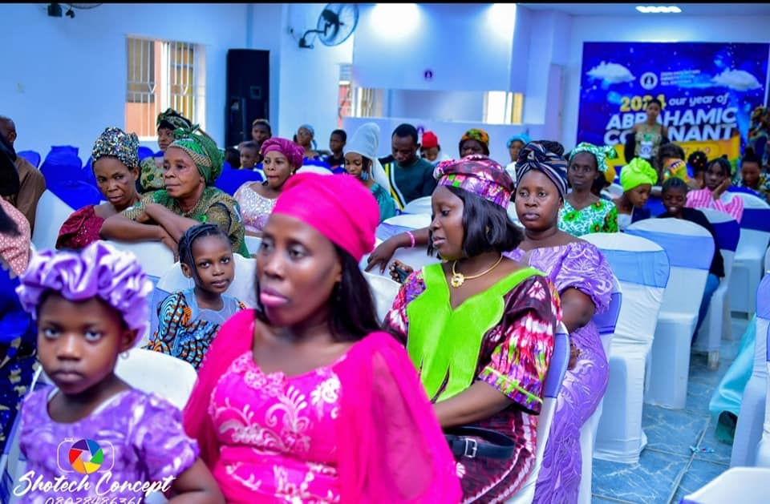
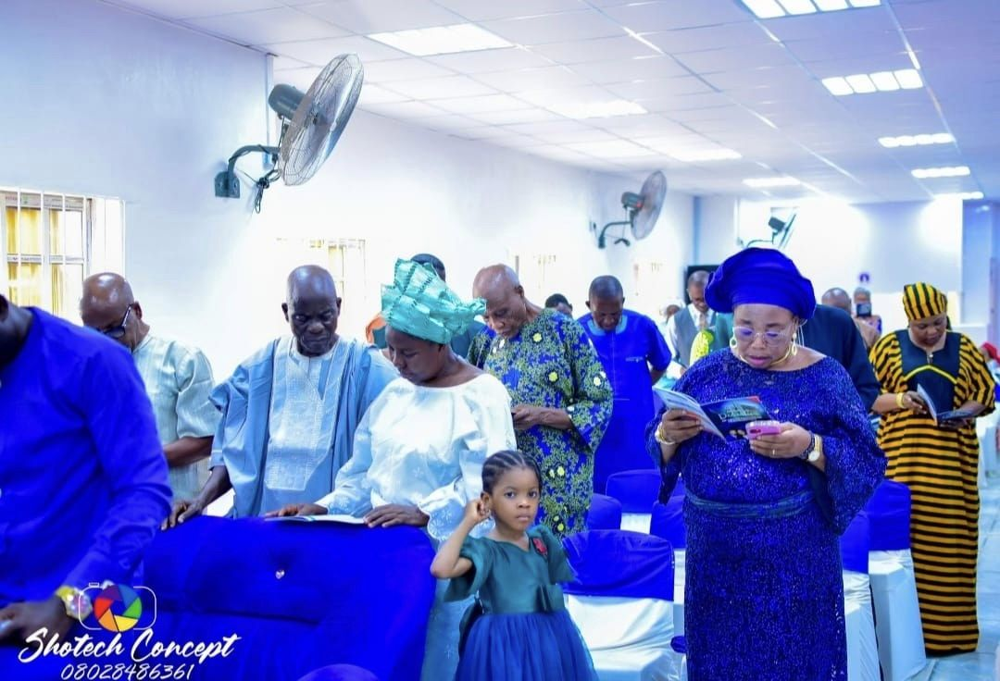
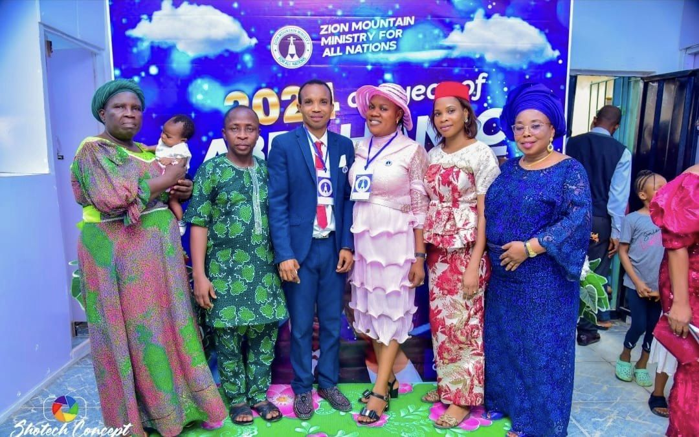
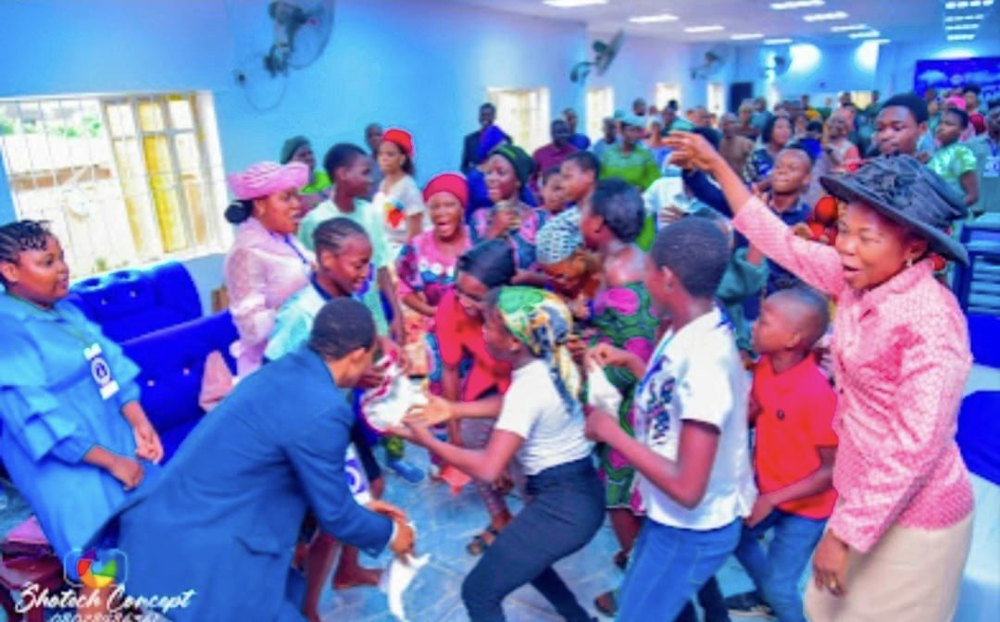
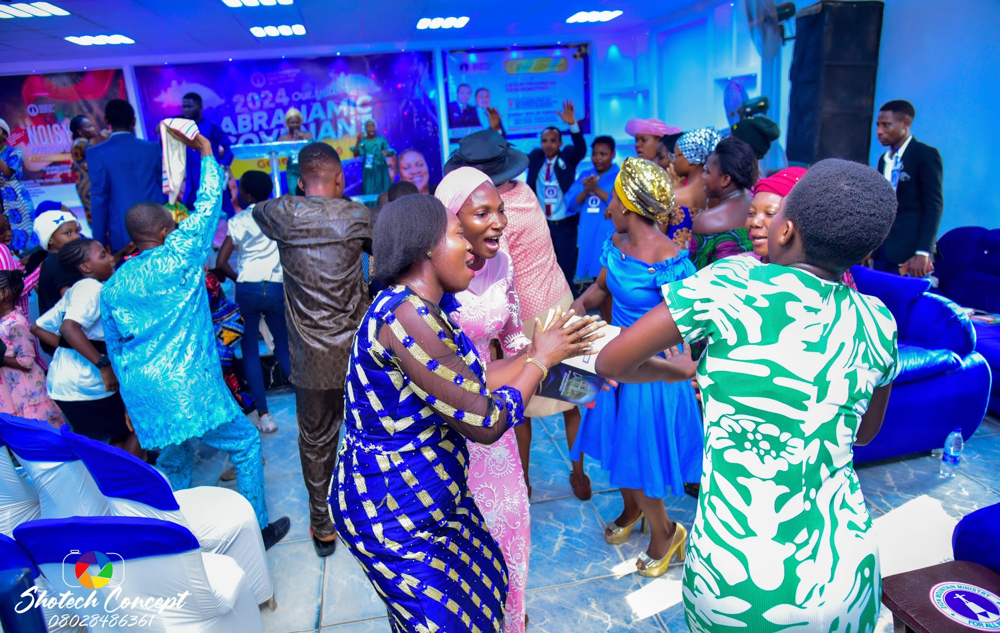
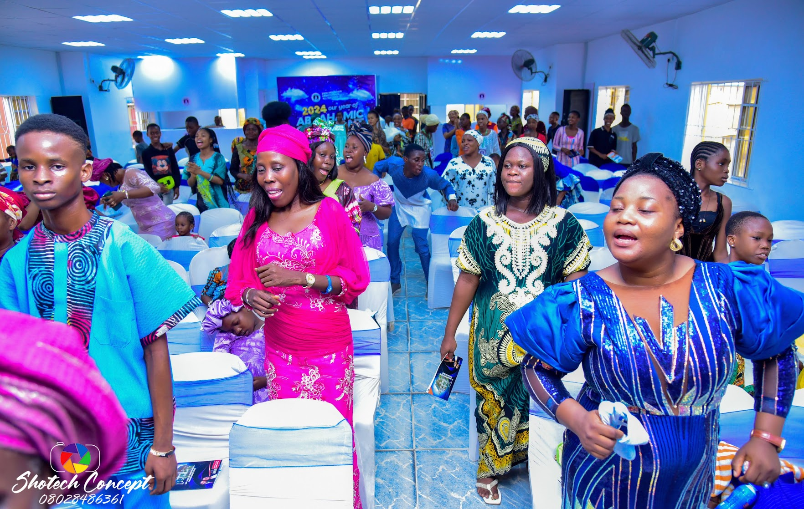
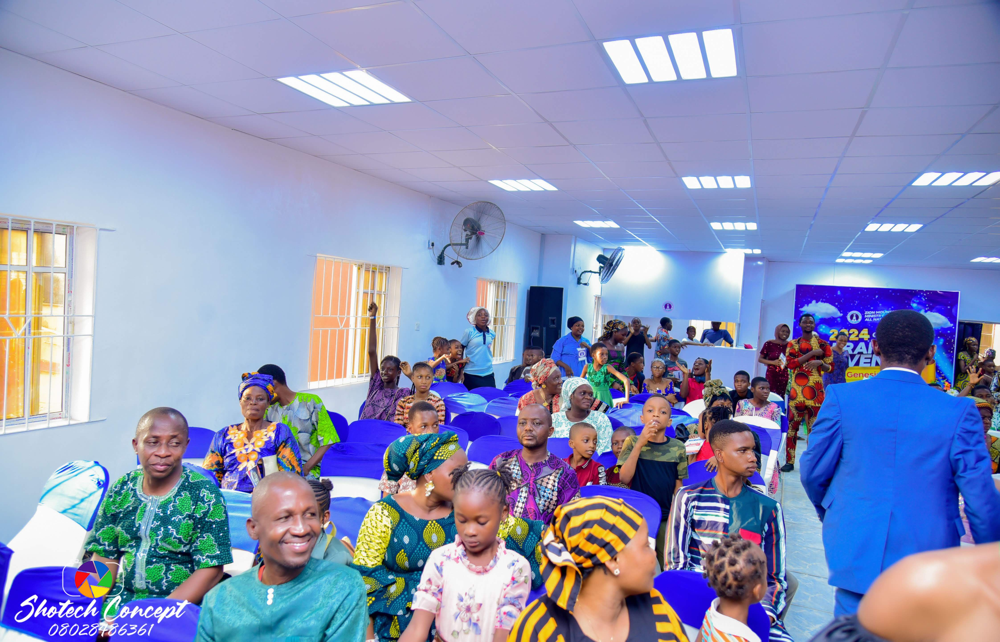
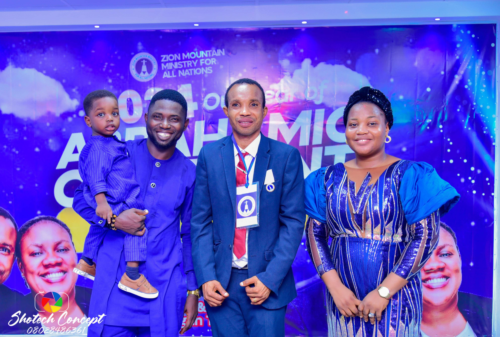
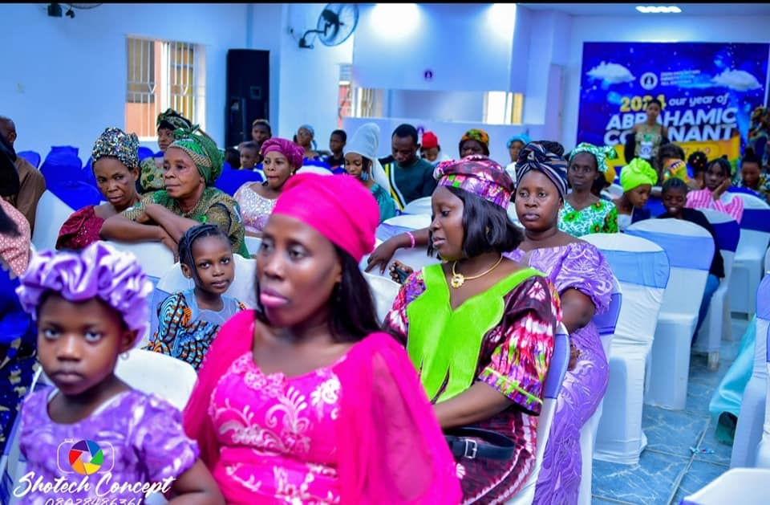
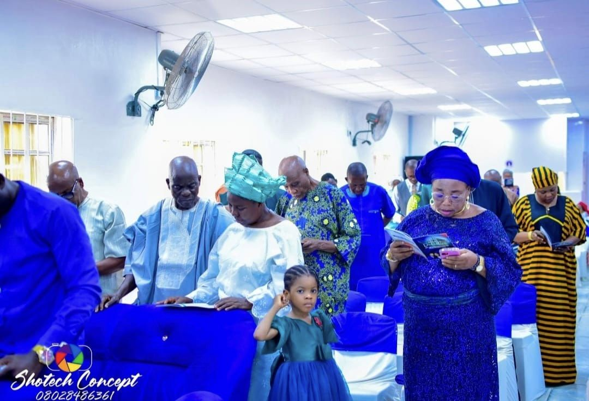
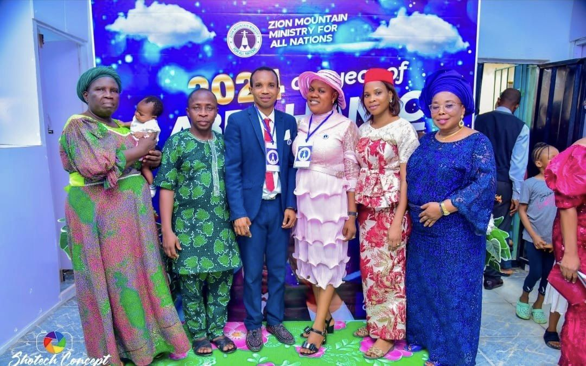
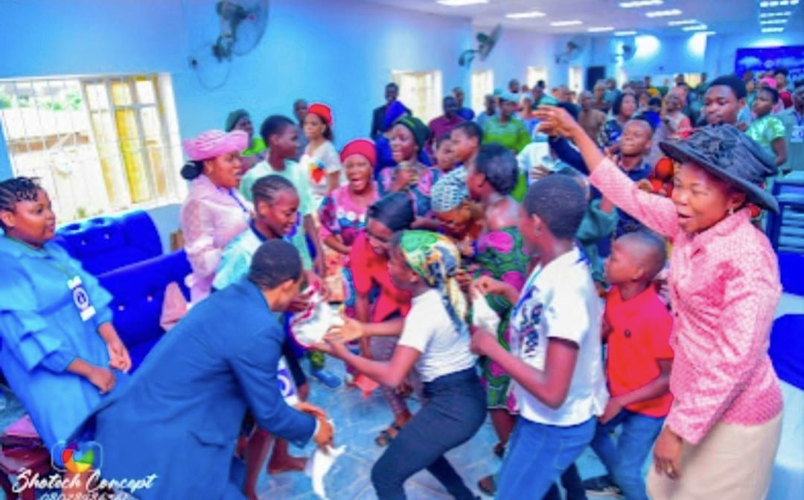
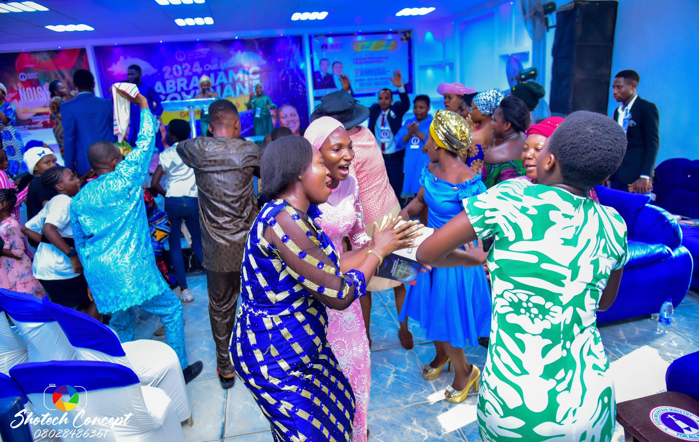
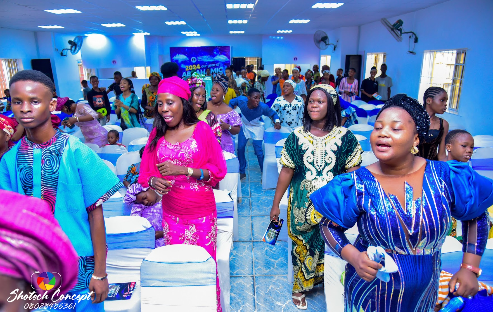
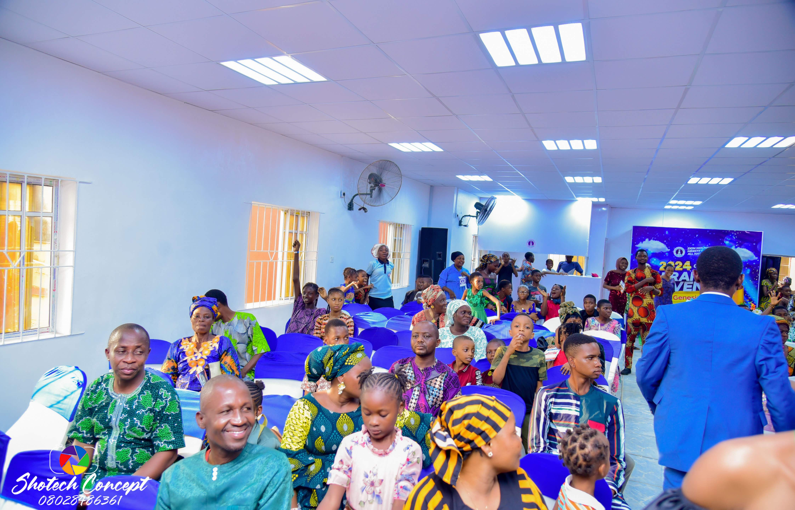
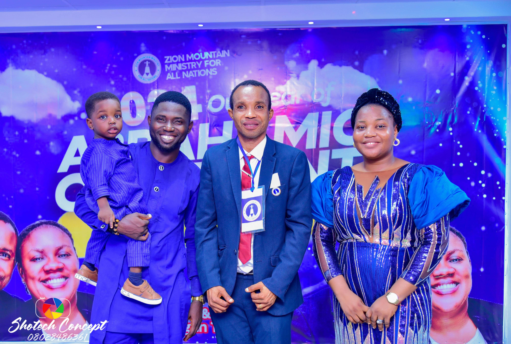


.jpg)
.jpg)
.jpg)
.JPG)